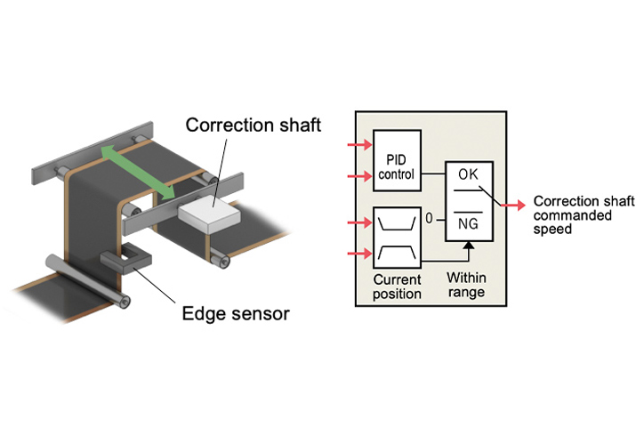
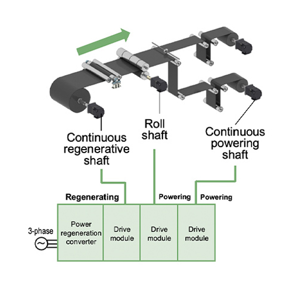
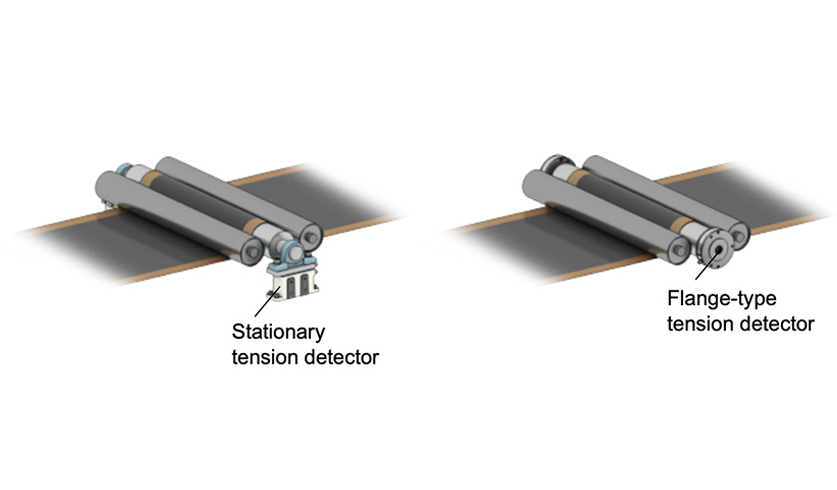

Solusi
Baterai Lithium-Ion

Slitter, Pemangkasan
- Koreksi pengendalian lintasan
- Penyeimbangan energi listrik
- Sensor deteksi tegangan

Solusi
| Masalah | Solusi |
|---|---|
| Untuk meningkatkan akurasi bentuk dan posisi pemotongan | Koreksi pengendalian lintasan |
| Penggunaan energi yang efisien | Penyeimbangan energi listrik |
| Untuk meningkatkan stabilitas tegangan selama percepatan | Sensor deteksi tegangan |
Masalah
Untuk meningkatkan akurasi bentuk dan posisi pemotongan
Keuntungan
Meningkatkan akurasi posisi horizontal material melalui kontrol umpan balik koreksi lintasan
- Memasang sensor tepi dan mengontrol posisi horizontal material untuk meningkatkan akurasi pembentukan dan akurasi pemotongan.
Poin
- Kontrol umpan balik koreksi lintasan memungkinkan realisasi mudah dari koreksi lintasan dalam berbagai proses seperti penggulungan, penguraian gulungan, dan proses di antaranya.

Masalah
Penggunaan energi yang efisien
Keuntungan
Menyeimbangkan energi penggerak penggulungan dan penguraian gulungan melalui bus daya umum dan konverter regenerasi daya
- Menyeimbangkan energi penggerak penguraian gulungan dan penggulungan untuk mencapai sistem hemat energi dengan menghubungkan ke bus daya umum dan menggunakan konverter regenerasi daya
Poin
- Energi listrik yang dihasilkan oleh penggerak penguraian gulungan dikonsumsi oleh penggerak penggulungan.
- Hal ini menghilangkan kebutuhan akan resistansi regeneratif pada penggerak penguraian gulungan, mengurangi pembangkitan panas dan ruang panel.

Masalah
Untuk meningkatkan stabilitas tegangan selama percepatan
Keuntungan
Rangkaian sensor deteksi tegangan yang dioptimalkan untuk spesifikasi mesin
- Rangkaian sensor deteksi tegangan dengan beban terukur dan bentuk yang sesuai untuk pemasangan mesin dan rentang pengukuran
Poin
- Sensor bawaan dari semua model menggunakan transformator diferensial yang tahan guncangan dan sangat tahan lama untuk memungkinkan deteksi tegangan yang stabil.
